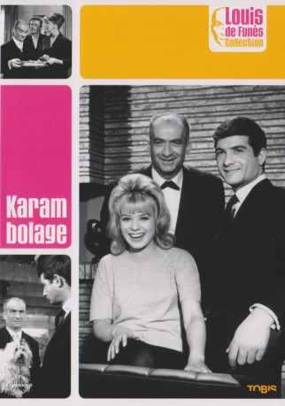
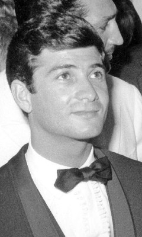
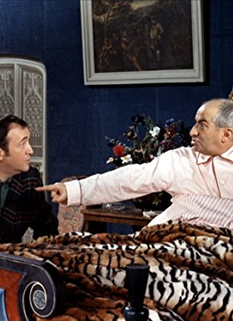
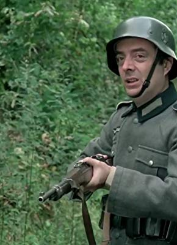
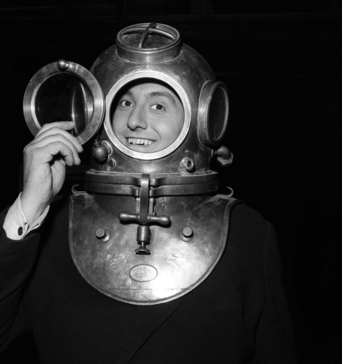

#4784 Karambolage
 
 IMDB-Wertung: 6.2 / 10
IMDB-Wertung: 6.2 / 10  Metascore: 0
Metascore: 0 
Der Geschäftsführer und Gründer des erfolgreichen Touristikunternehmens 321, Charolais, ist heute noch aufgeregter als sonst: Gerade hat ihm der kleine Angestellte Martin eine wirklich zündende Idee für die Feier des 25-jährigen Firmenjubiläums geliefert. Dieses ist nur der neueste Coup des strebsamen Martin, der unbedingt befördert werden will. Er ist bereits mit Danielle, der Tochter seines direkten Vorgesetzten, verlobt - auch eine Maßnahme zur Karriereförderung. Außerdem hält er sich noch heimlich die Sekretärin Solange als Geliebte. Erhebliche Ausgaben stehen dem emsigen Martin bevor: Die Hochzeit mit Danielle, die erste gemeinsame Wohnung - und bald auch noch Alimente für Solange. Die ist nämlich schwanger.
Jahr: 1963
Dauer: 84 Minuten
FSK: 16
Land: Frankreich Studio: MGMTonspuren:
Untertitel:
Auflösung: SD (608x368) Größe: 699 MB
Genre: Komödie, Krimi
Regisseur: Marcel Bluwal
Drehbuch: Kieran Fitzgerald
Soundtrack:
Darsteller:
- Jean-Claude Brialy als Paul Martin
 Louis de Funès als Norbert Charolais
Louis de Funès als Norbert Charolais Michel Serrault als Le commissaire Baudu / Policeman Baudu
Michel Serrault als Le commissaire Baudu / Policeman Baudu- Guy Bedos als
 Alain Delon als Lambert , uncredited
Alain Delon als Lambert , uncredited- Sophie Daumier als Solange
- Anne Tonietti als Danielle Brossard
-  Henri Virlojeux als Brossard
- Alfred Adam als Hubert Beaumanoir
- Marcelle Arnold als Mademoiselle Andréa
- René Clermont als Frépillon
-  Jacques Dynam als Macheron
- Paul Gay als Le speaker TV
- Gilberte Géniat als Madame Brossard
- Jean Ozenne als D'Aleyrac
- Marc Arian als Un huissier , uncredited
- André Badin als Un représentant de sandales , uncredited
- Charles Bayard als Un représentant , uncredited
- Marcel Bernier als Un acheteur de journaux , uncredited
- Robert Blome als Un collaborateur de l'agence , uncredited
- Florence Blot als La tenancière de 'Paris Élite' , uncredited
- Philippe Castelli als Le portier du 321 , uncredited
- Henri Coutet als (uncredited
- Martine de Breteuil als Une invitée , uncredited
- Albert Dinan als Un homme , uncredited
- Anne Doat als (uncredited
- Gisèle Grandpré als Mme Charolais , uncredited
- René Hell als M. Martin , uncredited
- Guy Henry als (uncredited
- Jessie Jeffort als (uncredited
-  Michel Modo als Le facteur , uncredited
- Max Montavon als Un agent de police , uncredited
- Jean Obé als L'employé du parking , uncredited
- Jean-Claude Rémoleux als Un employé de l'entreprise , uncredited
-  Pierre Tchernia als Legris , uncredited
- André Tomasi als Un inspecteur , uncredited
- Dominique Zardi als (uncredited
Datei: X:\Person\Louis de Funès\Karambolage (1963, FSK16, 608x368).avi seit 15.11.2016
Festplatte: HD Collection-7+mehr(A-Z)+Person
 Es gibt insgesamt 33 Filme in der Gruppe 'Person\Louis de Funès'
Es gibt insgesamt 33 Filme in der Gruppe 'Person\Louis de Funès'